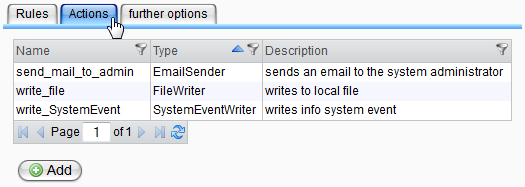
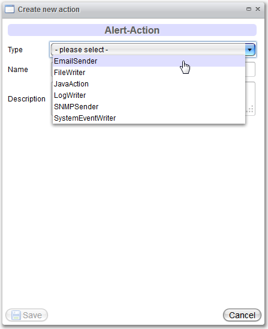
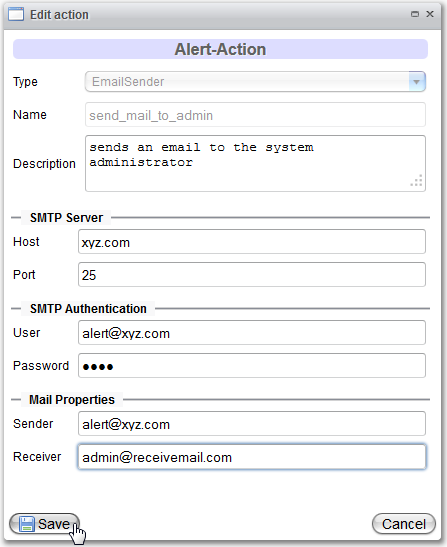

Alert Actions

Topic content
Overview
The actions that a rule can process are displayed in the tab "Actions" in the main view of the alert system.

Double clicking a table entry opens a detail view where details of actions can be changed subsequently.
Clicking on the "Add"-button below the table opens an empty form for creation new actions.
Deletion is possibly by using the context menu of the table. Be careful: an action can only be deleted if it is not used by any rule. Otherwise, an error message is shown with the name of the referencing rule.
Creating Actions
For every action type any number of instances can be created, for example for the E-Mail sending to different responsible persons.

While creating a new action, the type has to be selected first. After this choice, the lower area of the window will be filled with the needed input fields.
|
The name of the action is used as the identifier and has to be unique! |
During the saving, all compulsory input will be checked and a warning appears if any input is missing or wrong.
Editing Actions

For viewing and editing actions, unchangeable fields are disabled in the dialog. The description and type specific data can be changed at any time.